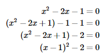
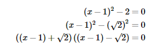
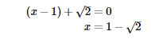

We have seen that expressions of the form x2−b2x2−b2 are known as differences of squares and can be factorised as(x−b)(x+b)(x−b)(x+b) . This simple factorisation leads to another technique for solving quadratic equations known as completing the square.
Consider the equation x2−2x−1=0x2−2x−1=0 . We cannot easily factorise this expression. When we expand the perfect square (x−1)2(x−1)2 and examine the terms we see that (x−1)2=x2−2x+1.
We compare the two equations and notice that only the constant terms are different. We can create a perfect square by adding and subtracting the same amount to the original equation.
Method 1: Take square roots on both sides of the equation to solve for x.
Very important: Always remember to include both a positive and a negative answer when taking the square root, since22=4 and (−2)2=4 .
Method 2: Factorise the expression as a difference of two squares using 2=(√2)22=(√2)2.
We can write
The solution is then
or
Method for solving quadratic equations by completing the square